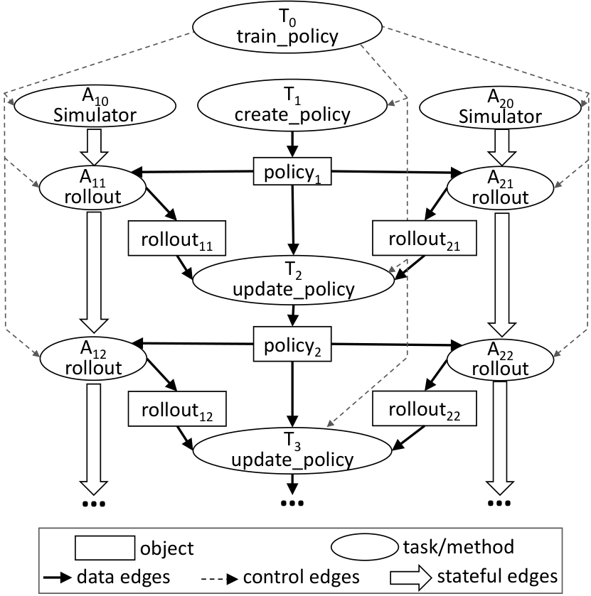
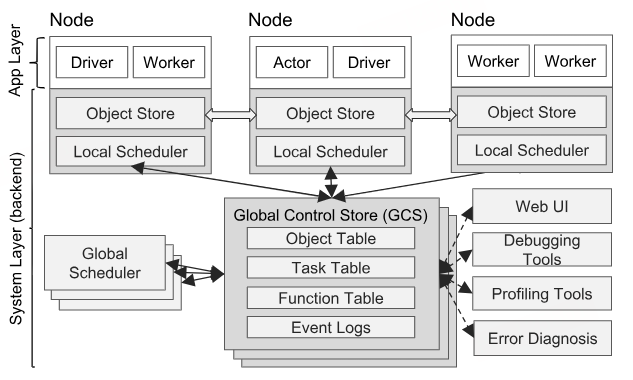
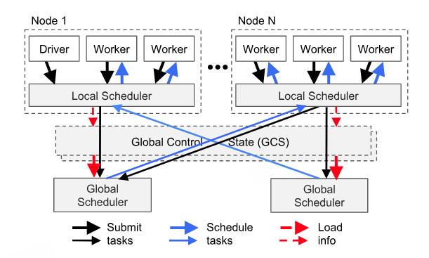
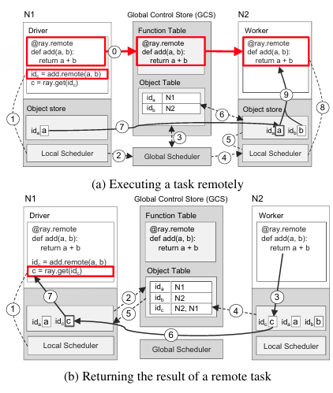

2018年的论文与后续版本的Ray实现可能不同，例如论文中提到的基于 Redis 和 chain replication 实现的GCS在后续版本已被进程内in memory的GCS替代。
动机与需求
强化学习（RL）需要三项主要的能力
- 依赖仿真来评估策略，通过仿真来探索不同的动作序列了解这些选择的长期后果（仿真）
- 需要执行分布式训练，基于通过仿真与物理环境交互生成的数据来改进策略（训练）
- 为控制问题提供解决方案，对策略进行服务化部署（推理）
这些特性带来了新的系统需求，必须支持细粒度计算（以毫秒级渲染动作，执行海量仿真），时间上的异构性（一次仿真可能持续数毫秒到数小时）和资源使用上的异构性（使用GPU训练，使用CPU仿真）。
为大数据负载或监督学习工作负载而开发的框架无法满足RL的这些需求，MapReduce、Spark、Dryad这些BSP调度不支持细粒度的仿真和推理服务。CIEL和Dask这类任务并行系统以及Naiad和Storm这样的流处理系统缺乏对训练和推理的支持，TensorFlow和MXNet这样的深度学习框架不支持仿真与推理，TensorFlow Serving和 Clipper之类的推理系统不支持训练和仿真。通过拼接现有系统来开发端到端的解决方案给分布式应用带来了系统工程负担，因为这样就把调度、容错和数据移动等标准系统挑战推给每个应用。
Ray作为一个通用的集群计算框架，可以同时为 RL 提供仿真、训练、推理。Ray实现了一个统一接口，能够表达并行计算与基于actor的计算。
编程模型
Ray同时提供actor编程抽象和任务并行编程抽象，这区别于CIEL这样的任务并行抽象系统，也区别于主要提供actor抽象的Orleans和Akka。
| API | 含义 |
|---|---|
| futures = f.remote(args) | 异步执行远程函数，立即返回 future，非阻塞调用 |
| objects = ray.get(futures) | 阻塞并取得 future 对应的对象，阻塞调用 |
| ready_futures = ray.wait(futures, k, timeout) | 在最先完成的 k 个结果就绪或超时后返回，阻塞调用 |
| actor = Class.remote(args) | 创建远程 Actor，返回 Actor handle，非阻塞调用 |
| futures = actor.method.remote(args) | 异步调用 Actor 方法，返回 future，非阻塞调用 |
Task表示在无状态工作进程上执行远程函数，当调用远程函数时，会立即返回一个表示该任务结果的 future。可使用 ray.get() 获取 future，也可将其作为参数传入其他远程函数而无需等待其结果。这使用户能够表达并行性，同时捕获数据依赖关系。远程函数作用于不可变对象，并要求是无状态且无副作用的，要求幂等性，其输出完全由输入决定，从而在失败时可以重新执行函数而简化容错。
Actor表示有状态计算，每个Actor暴露可远程调用并串行执行的方法，对同一个 Actor 的方法调用按顺序执行，后一个方法能看到前一个方法留下的内部状态。
Task的优势在于
- 在任务粒度上利用负载感知调度，实现细粒度负载均衡
- 将每个任务调度到存储其输入的节点上，实现输入数据局部性
- 具有较低的恢复开销，因为无需对中间状态进行检查点和恢复
Actor的优势在于
- 提供高效得多的细粒度更新，因为这些更新在内部状态而非外部状态上执行，而外部状态通常需要序列化和反序列化。
为了满足异构性和灵活性的要求，以三种方式扩展了API
- 为了处理持续时间异构的并发任务，引入了ray.wait()，等待前k个可用结果，而不是像ray.get()一样等待所有结果
- 为处理资源需求异构的任务，Ray使开发者能够指定资源需求，以便 Ray 调度器高效管理资源。
- 为提高灵活性，Ray支持嵌套远程函数，即远程函数可以调用其他远程函数。这对于实现高可扩展性至关重要，因为它使多个进程能够以分布式方式调用远程函数。
| Task（无状态） | Actor（有状态） |
|---|---|
| 细粒度负载均衡 | 粗粒度负载均衡 |
| 支持对象局部性 | 局部性支持较差 |
| 小规模更新开销高 | 小规模更新开销低 |
| 高效的故障处理 | 检查点机制带来的故障恢复开销 |
计算模型
Ray 采用动态任务图计算模型，其中远程函数和 actor 方法的执行均会在其输入可用时由系统自动触发。接下来描述怎么把下面的用户程序构造出计算图。
1 |
|

首先暂不考虑 actor，计算图中有两类节点：数据对象和远程函数调用（即任务Task）。边也有两类：数据边和控制边。数据边表示的是数据对象与任务之间的依赖关系。控制边表示的是由Task产生的计算依赖：如果任务 T1 调用任务 T2 ，则添加一条从 T1 到 T2 的控制边。
actor 方法调用也表示为计算图中的节点。它们与任务相同，但有一个关键差异。为描述同一 actor 上后续方法调用之间的状态依赖，我们添加第三类边：有状态边。如果一个方法在同一 actor 上紧接在另一个方法之后被调用，则有状态边。因此，在同一 actor 对象上调用的所有方法形成一条由有状态边连接的链。该链描述了这些方法被调用的顺序。
有状态边有助于我们将 actor 嵌入原本无状态的任务图，因为它们体现了共享 actor 内部状态的连续方法调用之间的隐式数据依赖。有状态边还使我们能够维护血缘关系。与其他数据流系统一样，我们跟踪数据血缘以支持重建。通过将状态边显式纳入血缘图，我们可以轻松重建丢失的数据，无论这些数据是由远程函数还是 actor 方法生成的。
架构
Ray 的架构包括
- 实现 API 的应用层
- 提供高可扩展性和容错性的系统层

应用层
应用层由三类进程组成
- Driver：执行用户程序的进程。
- Worker：无状态进程，用于执行Task（远程函数）。Worker 由系统层自动启动并分配任务。当远程函数被声明时，该函数会自动发布到所有 worker。单个 Worker 串行执行任务，任务之间不保留任何本地状态。
- Actor：有状态进程，在被调用时仅执行其对外暴露的方法。与 worker 不同，actor 由 worker 或 driver 显式实例化。与 worker 一样，actor 串行执行方法，不同之处在于每个方法都依赖于前一方法执行所产生的状态。
系统层
系统层由三个主要组件组成：全局控制存储、分布式调度器和分布式对象存储。所有组件均具备水平可扩展性和容错性。
全局控制存储(GCS)
GCS 是一个具有Pub-Sub功能的键值存储，用于维护集群的全部控制状态。GCS使用分片来实现扩展，并使用分片的链式复制来提供容错性。GCS可以为每秒动态生成数百万个任务的系统维持容错能力和低延迟。
为了在节点故障的情况下维护血缘信息，Ray将持久化血缘存储与其他系统组件解耦，使各组件能够独立扩展。
任务调度涉及到选择执行位置，任务分发涉及从其他节点获取远程输入。许多系统将对象位置和大小存储在集中式调度器中来耦合二者，这在调度器不是瓶颈时是一种自然设计。但是Ray的规模要求调度器远离关键路径，Ray将对象元数据存储在 GCS 而非调度器中，从而将任务分发与任务调度完全解耦。
GCS使系统中的每个组件都保持无状态，简化了对于容错的支持，发生故障时，组件只需重新启动然后从GCS读取血缘信息，而且使分布式对象存储和调度器易于独立扩展，因为所有组件都通过 GCS 共享所需状态。另一个好处是易于开发调试、性能分析和可视化工具。
自底向上的分布式调度器
Ray需要每秒调度数百万个任务，而这些任务仅需几毫秒。大多数框架，如Spark、CIEL、Dryad实现的是集中式调度器，这些调度器能提供局部性但是延迟在数十毫秒量级。work-stealing、Sparrow、Canary之类的分布式调度器能够实现大规模的调度，但它们要么不考虑数据局部性，要么假设任务属于相互独立的作业，要么假设计算图已知。
Ray使用了全局调度器和每节点本地调度器组成的两级层次化调度器，调度过程如下
- 新任务先提交给创建它的节点上的本地调度器，本地调度器会在本地调度任务，除非该节点过载或者无法满足任务的需求（例如缺少 GPU）
- 如果本地调度器决定不在本地调度某个任务，则将其转发给全局调度器
- 全局调度器会考虑每个节点的负载和任务的约束来制定调度决策，识别出具有任务所请求类型足够资源的节点集合，并在这些节点中选择估计等待时间最低的节点。
估计等待时间 = 本地排队时间 + 任务远程输入传输时间 ≈ 队列长度 × 平均任务耗时 + 远端输入总大小 ÷ 平均网络带宽
全局调度器通过心跳获取每个节点的队列大小和节点资源可用性，并从 GCS 获取任务输入的位置及其大小。此外，全局调度器使用简单指数平均计算平均任务执行时间和平均传输带宽。

内存分布式对象存储
Ray实现了一个内存分布式存储系统，用于存储每个任务的输入与输出，或无状态计算的输入与输出。在每个节点上，我们通过共享内存实现对象存储，使用 Arrow 作为数据格式，允许同一节点上运行的任务之间进行零拷贝数据共享。
如果任务的输入不在本地，则在执行前将输入复制到本地对象存储。任务运行完成后将输出写入本地对象存储。复制避免了热对象的潜在访问瓶颈，缩短任务执行时间，提高计算密集型工作负载的吞吐量。为了低延迟，Ray将对象保留在内存当中，并根据需要使用 LRU 策略逐出到磁盘当中。
对象存储仅限于不可变数据。这消除了对复杂一致性协议的需求，并简化了容错实现。在节点故障的情况下，Ray 通过血缘重执行来恢复任何所需对象。GCS 中存储的血缘在初始执行期间同时跟踪无状态任务和有状态 actor；Ray 使用前者来重建存储中的对象。
整合应用层和系统层
论文通过一个简单示例说明了 Ray 如何端到端工作：该示例将两个对象 a 与 b 相加，并返回结果 c 。远程函数 add() 在初始化时自动注册到 GCS，并被分发到系统中的每个工作进程（第 0 步）。

图a展示了Driver调用add.remote(a,b)所触发的逐步操作，其中a和b分别存储在N1和N2上，Driver先将Task提交到本地调度器（步骤1），随后转发给全局调度器（步骤2），接下来全局调度器根据查询的参数位置(步骤3)，决定调度到存储参数b的节点N2上（步骤4）。N2上的本地调度器检查本地对象存储是否包含add(a,b)的参数(步骤5)，然后在GCS查找参数a的位置(步骤6)，将存储在N1的a复制到本地的对象存储(步骤7)，由于add的所有参数都存储在本地了，本地调度器在worker上调用add（步骤8），worker通过共享内存访问这些参数(步骤9)。
图b展示了分别由在N1处执行ray.get()和在N2处执行add()所触发的分步操作。在调用ray.get时，Driver检查本地对象存储是否存在值c，并使用add返回的future id（步骤1）。由于本地对象存储未存储 c，它会在 GCS 中查找其位置。此时 c 尚未创建。因此N1的对象存储向GCS的Object Table注册一个回调，以便在 c 的条目创建时触发（步骤 2）。当 N2 节点上add() 完成执行后，将结果 c 存入本地对象存储（步骤 3），本地对象存储进而将 c 的条目添加到 GCS 中（步骤 4）。因此，GCS 使用 c 的条目向 N1 的对象存储触发一个回调（步骤 5）。接下来，N1 从 N2 复制 c（步骤 6），并将 c 返回给 ray.get()（步骤 7），最终完成任务。
评估
论文接下来这段是Ray的benchmark，体现了 Ray 在提供通用抽象的同时没有牺牲性能。本篇笔记跳过这里。
理解
- Ray 在设计API时强调极简主义，基于ray-core 的核心库提供了 RL 应用的关键最小抽象，在上层衍生出了ray-tune/ray-train/ray-serve/ray-data 等更高阶的语义
- 由于Ray面对的工作负载的通用性和动态性，Ray难以在不了解计算图的情况下做出最合理的调度决策，只能根据运行时统计信息做出近似决策